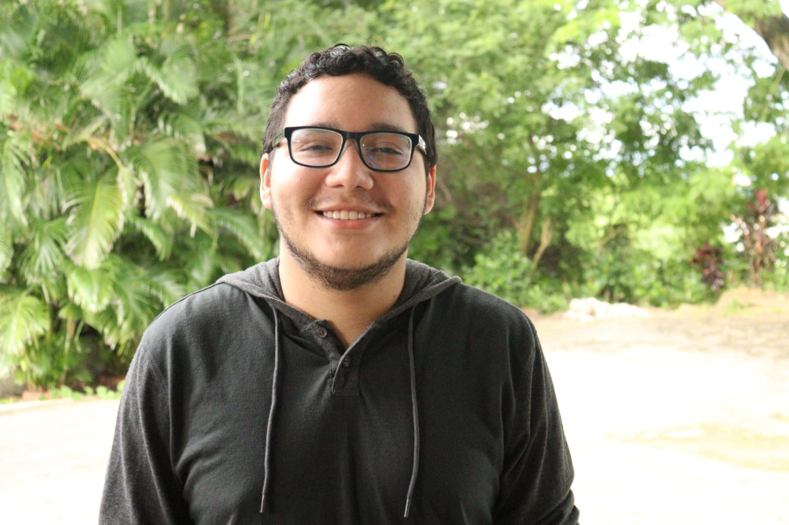

DETRÁS DEL PROYECTO
Sobre el creador.

VIDEOJUEGOS · TECNOLOGÍA · SOFTWARE
Bryant Yamir
Rodríguez Rodríguez
Hola, tengo 25 años y actualmente soy estudiante de la Licenciatura en Desarrollo y Gestión de Software.
En mis ratos libres me gusta mucho jugar videojuegos. Es uno de mis pasatiempos favoritos porque me ayuda a desconectarme un poco del estrés, divertirme y, al mismo tiempo, ejercitar la mente con estrategias, trabajo en equipo y toma de decisiones rápidas.
Me gusta todo lo relacionado con la tecnología y el entretenimiento digital, así que siempre encuentro algo nuevo que me llama la atención en ese mundo.